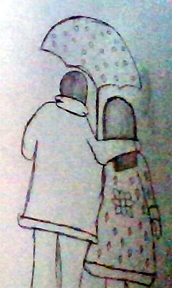
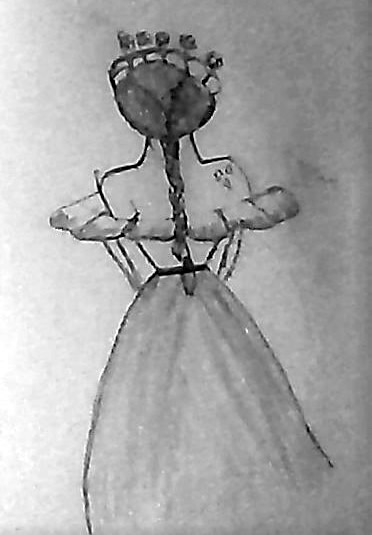
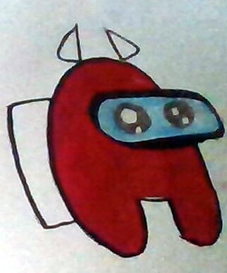

My Art
by Jana-Lee
Art is one of my favorite things to do. When I was smaller all I did was draw things that came to my mind. I don’t know who I got it from in the family but I kept on doing it because it was fun. Then I started to learn how to paint and do them on canvases.
Doing painting and art is one of the best things ever. Everyone thought it was weird for a 8 year old to start liking art and paint that much but it wasn’t to me it was pretty normal and very fun to do. Kids in school used to make fun of it and sometimes I didn't even want to put my pencil on the paper.
Here are some of my latest works:
